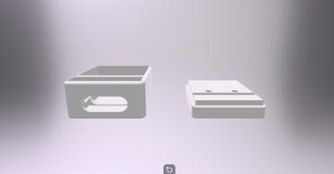

This design showcases a 3D printed protective case specifically created for the ESP32-C3 Zero microcontroller board. The model focuses on simplicity, durability, and ease of access, providing reliable protection while maintaining a clean and minimal appearance.
The case consists of two main components: a base enclosure and a top cover. The base section securely holds the ESP32-C3 Zero board in place, while the removable top cover provides protection from dust, accidental contact, and minor impacts.
A side cut-out is included to allow easy access to ports and connections such as USB or GPIO pins, ensuring that the board remains fully functional even when enclosed.
The structure is compact and lightweight, making it ideal for portable or embedded applications. The enclosure walls are designed to be sturdy enough to protect internal components while minimizing material usage for efficient 3D printing.
The top cover features a flat, layered design with subtle details that allow it to sit securely on the base. This two-part assembly makes installation and removal quick and convenient.
The case can be printed using common 3D printing materials such as PLA or ABS. The design is optimized for easy printing without the need for complex supports, making it suitable for most standard desktop 3D printers.
This protective case is ideal for electronics projects, prototyping, and IoT applications. It helps safeguard the ESP32-C3 Zero board when used in development environments, educational setups, or deployed projects.
Overall, this 3D printed case provides a practical and efficient solution for protecting the ESP32-C3 Zero. With its functional design and simple assembly, it enhances both the durability and usability of the microcontroller setup.
